Introduction
This project was an assignment for the subjects 'HCI Mastery' and 'Seductive Interaction Design' during the minor User Experience Design I completed in 2021.
The design challenge
Ommetje is an app by the Dutch Brain Foundation, that aims to persuade people to walk 20 minutes every day, because doing so is good for mental/brain health. Ommetje has become succesful, having around 200.000 daily users. However, their original goal was to reach younger people; those under 40 years old (later referred to as 'the users/users').
This user group has been becoming less active each day, with users becoming inactive for 2 main reasons:
- The app seemed useful to the young users at first, but they were demotivated by the strong competitive aspect.
- The app is deemed to be quite dull and outdated. Erik Scherder, a professor in neuropsychology who is used as something like a mascot in the app, doesn't appeal to the younger user base.
He's old, but still thinks he's cool.
Ommetje needs to be improved and taken to the next level, so it will appeal more to the younger users. Some key objectives are:
- The app needs to feel more like a personal trainer.
- The competitive aspect shouldn't demotivate users to use the app.
- The user should be persuaded to continue walking for more than 10 minutes.
- The look & feel of the app should be consistent with the Dutch Brain Foundation.
- The existing flow may be altered when there is adequate reason to do so.
Selected flow
This flow was selected because it poses an interesting opportunity to solve the problems that Ommetje is experiencing. The aim is to create a more gentle but also motivating app, according to the following princicples:
- Community over competition: the competitive aspect needs to be diminished, and the 'in it together'-feeling must be amplified
- It should be a pleasant experience: the current app doesn't feel playful or like the gamification part fits in the design. The redesign should add a new layer of fun to the app.
Current situation
![a graphic showing the current screen designs of the flow mentioned before, with some more details about what is going wrong. Important points are that the home screen is not inviting, and focuses too much on competition. The stop button during the walk looks to inviting, and when you cancel your walk, Erik Scherder's happy face pops up, indicating that he's happy you're quitting. The brain fact you receive after completing a walk is not scannable (information overload), and the results screen is quite boring. The 'receiving a badge' -screen is a bit better than the others, but could be improved by adding suggestions and/or a link to their collection of badges.](styles/images/ommetje/currentscreens.jpg)
Goals
Before redesigning the experience of Ommetje, it is very importan to state what the relevant goals of the user and the business (Ommetje/Dutch Brain Foundation) are. What does the business want, what does the user want, and where do these goals unite?
Business goals
- Make users walk for more than 20 minutes.
- Persuade users to continue walking when they walk for less than 10 minutes.
- Increase engagement and continued usage in the 40- user base.
User goals
The user wants to...
Experience goals (FEEL)
- Have fun.
- Feel stress-free.
- Feel connected.
- Feel fit.
- Have a seamless experience (ease of use).
- Feel clear-headed.
End goal (DO)
- Take a fun walk outside.
- Relieve stress.
- Do activities in a group.
- Walk regularly.
- Use the app without any inconveniences.
- Take 20-minute walks.
Life goals (BE)
- Be happy.
- Be chill.
- Be part of a group.
- Be healthy.
- Be content.
- Have a healthy brain.
Customer journey map of current situation
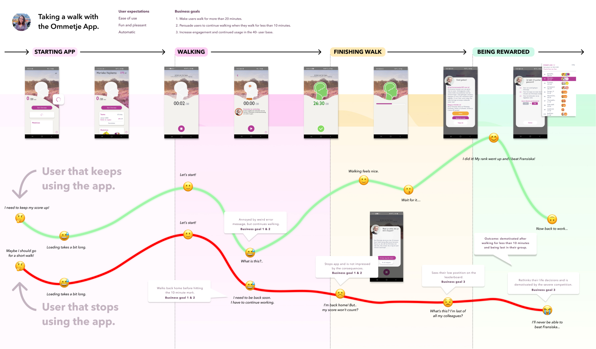Personality
As stated in the debriefing, the current personality of the app feels old, dull and outdated. It is important to create a personality that is more appealing to the younger users.
If the app would be a person out there in the world serving customers, its job would be:
- A health coach
The client proposed that a requirement or the personality would be that it would feel more like a personal trainer. This was slightly changed, as brain health is normally not something that is regarded as a main issue for personal trainers.
Customers would describe us as the most
- Energetic
- Insightful/clever
- Motivating
As the users found the app to be dull, outdated and demotivating, it would only be logical to change this identity to something that would better fit the young user base: energetic and motivating.
Also, the app has some aspects that should be conserved: the insightful and clever part of the app actually can be quite appealing. When people learn more about brain health, and the reason why they're going for walks, they will feel more engaged and motivated.
We never want to come off as
- Lazy
- Intrusive
- Overly competitive
- Demotivating
- Dull
- Outdated
These traits are basically all that the users didn't like about the current app, with some small additions. It is very important that the app adds some pleasantness to the sometimes mundane activity of going for a walk. A feeling of being outdated doesn't resonate with young users.
'Intrusive' was addes, because the goal of the app is to promote mental health. The app shouldn't utilize unnecessary push notifications or have a cluttered look. A lot of people use the app when they are taking a break from work, and being too stimulated might make them more stressed.
Script
The script, that was written to apply the personality traits to the main interactions, must depict a style that is both motivating (using words of praise), friendly and helpful. Information about brain health should always be summarized in an understandable wayk, so that it will decrease the cognitive load of the user. The focus should always be on the primary task: going for a walk.
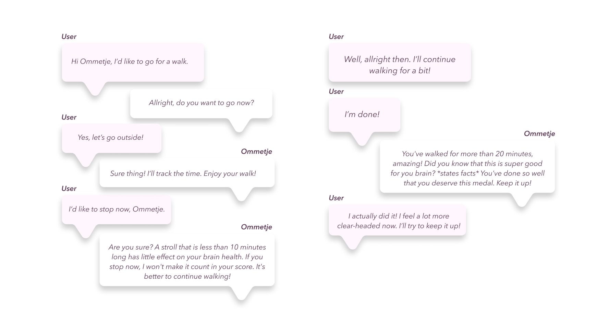New flow
I applied both HCI and seductive interaction design principles to the design, and created a new flow, that tackled both the user goals and business goals.
Some seductive interaction design principles I applied were: praise, rewards, self-monitoring, personalization, reminders, suggestion, simulation and liking.
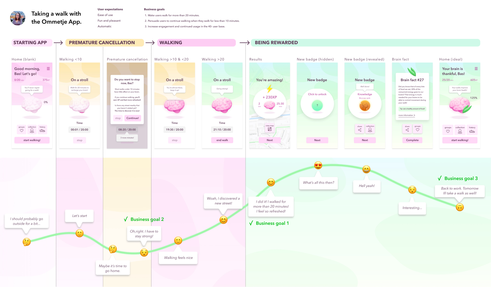Micro-interactions and animations
I designed animated micro-interactions to give the product character and to to decrease cognitive load and change blindness. I looked at the trigger, rules, feedback and loops of each micro-interaction, and animated them using principle. These micro-interactions are meant to improve the user experience; some are helpful in preventing change blindness and decreasing cognitive load, for instance.
To see the animations in action, please watch the product video at the bottom of this page.
Filling the brain meter
The design below shows how the color of the background changes to green, which is associated with health and nature, as the 'ommetje' (walk) progresses. The main goal of this animation is to communicate that over time the goal of walking 20 minutes will be achieved (cause & effect). The color will change once the user has walked for more than 20 minutes. Also, the end walk button is highlighted.
Animation principles
The button is transformed and easing is applied to the changing background color and button animations.
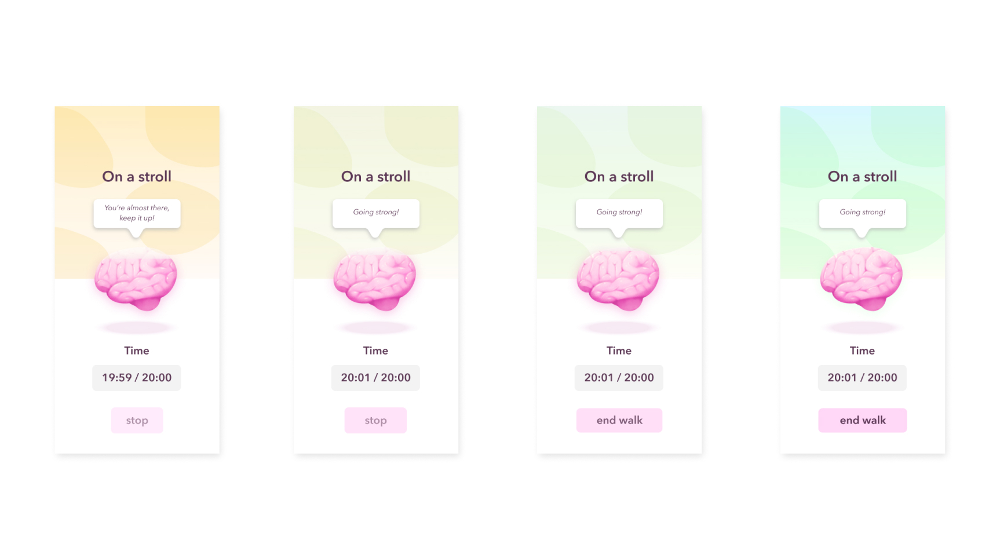Loading results
The main goal of this animation is to create a sense of orientation and simultaneously conveying a sense of anticipation & achievement (emotion). This animation is a bit more 'dramatic' than the others, as I wanted to reward the user and really let them know that they're doing great!
Animation principles
There’s a lot of offset, delay & easing going on in this animation, from the progress bar filling to the brain shrinking & text appearing. When the brain is at it’s smallest, the background, including the newly loaded map, play a dolly & zoom effect, making the background seem like it’s recoiling from the ‘impact’ of the brain that has struck the background. The white round solid behind the brain is transformed during this animation.
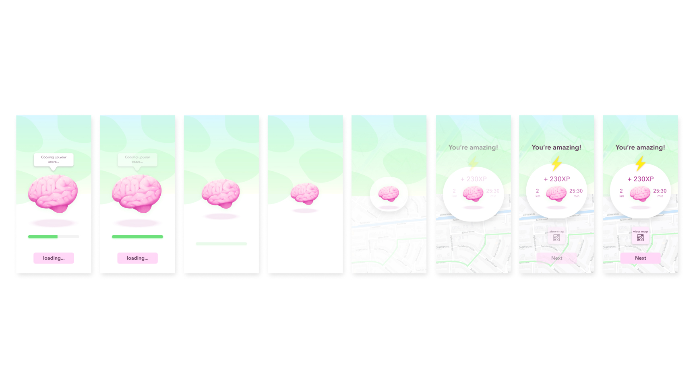Unlocking a new badge
The main goal of this animation is to convey a feeling of anticipation and joy. The new badge elastically appears into the screen, as if falling from above and bouncing on the shadow underneath the badge. The user should feel so very proud of their achievement!
Animation principles
Easing (timing & spacing) and offset & delay are applied to all animated elements. The bouncing badge conveys a sense of it being elastic, and the text bubble that rises up has to get a very light, floaty feeling.
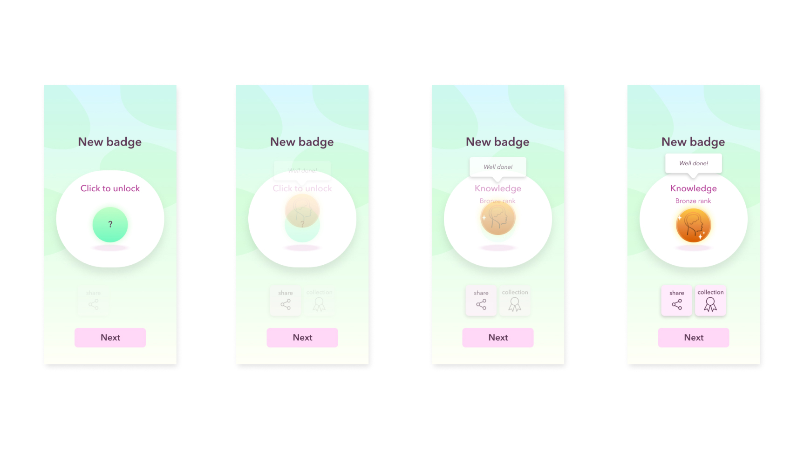Testing & Iterating
To validate (or disprove) the redesign, I created an assumption matrix which made it more clear which aspects were the most essential during the validation process. I conducted a couple of usability tests, based on the assumption matrix.
Crucial assumptions were:
- The user will use the app mostly for themselves.
- The user will be motivated by health benefits.
- The user will feel motivated by an encouraging group.
The results
The usability tests lead to some valuable insights, like:
- The first screen shows that the user has already walked 14 minutes, which is false given the context.
- The user will want to see at leas the shape of the route after completing a walk.
- The user will want the ‘brain facts’ to be to the point; reading takes too long.
- Community is important: user was invited by colleagues/classmates. It might be interesting to work towards a shared goal together (“together you walked to Paris and back!”) > encouragement over competition
- Health is certainly a factor, as the user was triggered to install the app partly because of being motivated by colleagues to go for more walks during the working-from-home situation.
- Pausing the walk automatically should take 2 - 5 minutes of inactivity (slow GPS, it’s not about competitive sports).
- Option for limited walks is interesting to help the user manage their time: this would excuse a notification when the user is halfway there.
Iterations
As this (school) project was only a few weeks long, I didn't have a lot of time to create multiple iterations, but I managed to apply some of the insights to the design, as shown below.
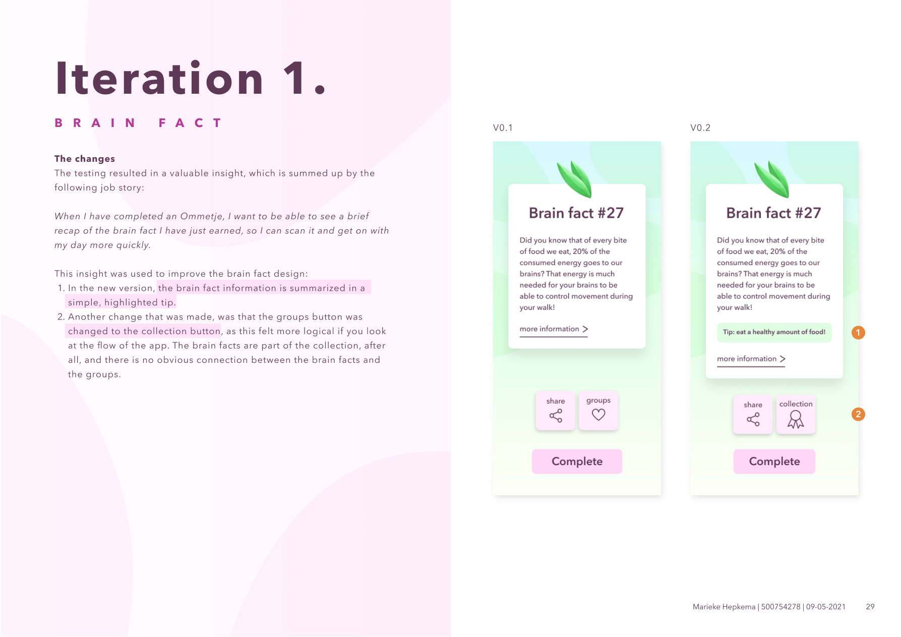 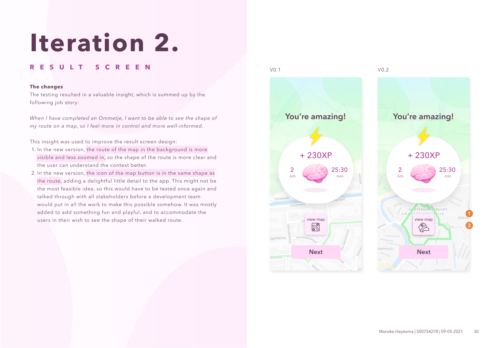 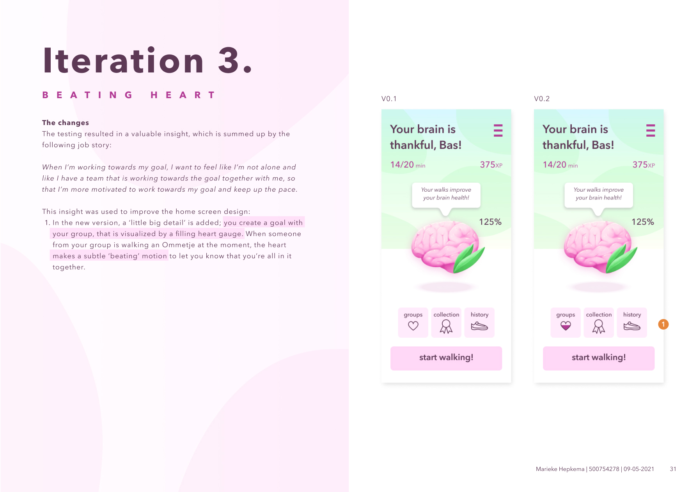The end result
This project was all about finding the balance between the important business goals and the goals of the users of the Ommetje app. By locating the problems in the current situation and utilizing seductive principles and HCI guidelines, I was able to create some redesign proposals. It was very interesting to look at the Ommetje app from this perspective. Learning about the various kinds of goals proved to be very helpful for defining the scope of the redesign.
I especially like the kinds of projects where you get the opportunity to use digital tools to stimulate healthy behaviour. In a world full of dark (behavioural) patterns, it's nice to be able to use seductive principles for something positive.
Prototype video
Please have a look at the prototype video below, where you can see more clearly how the animations play out.
What I learned
I think this project really helped me to look at all those small parts that make a product more seductive. Even the visual style can play a big role in stimulating the user. This really shouldn't come as a surprise to me, though, as I'm the kind of person that low-key does judge books by their covers at first, as I love graphic design ;). But on a serious note; a lot of the principles were relatively new to me, and they helped me to look more critically at products I use as well; which patterns are they using to influence me?
This project also helped me to hone my Principle skills further. I created the designs in Figma, and animated the biggest part using Principle. I think this has made the prototype a lot more strong and convincing.
Tools
I created the designs using Figma, and animated the Figma prototype using Principle.
 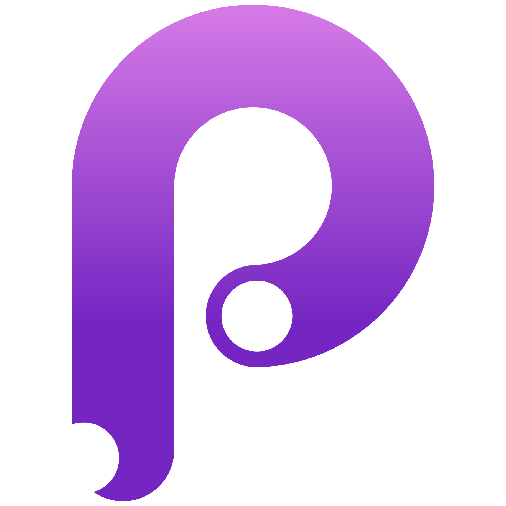
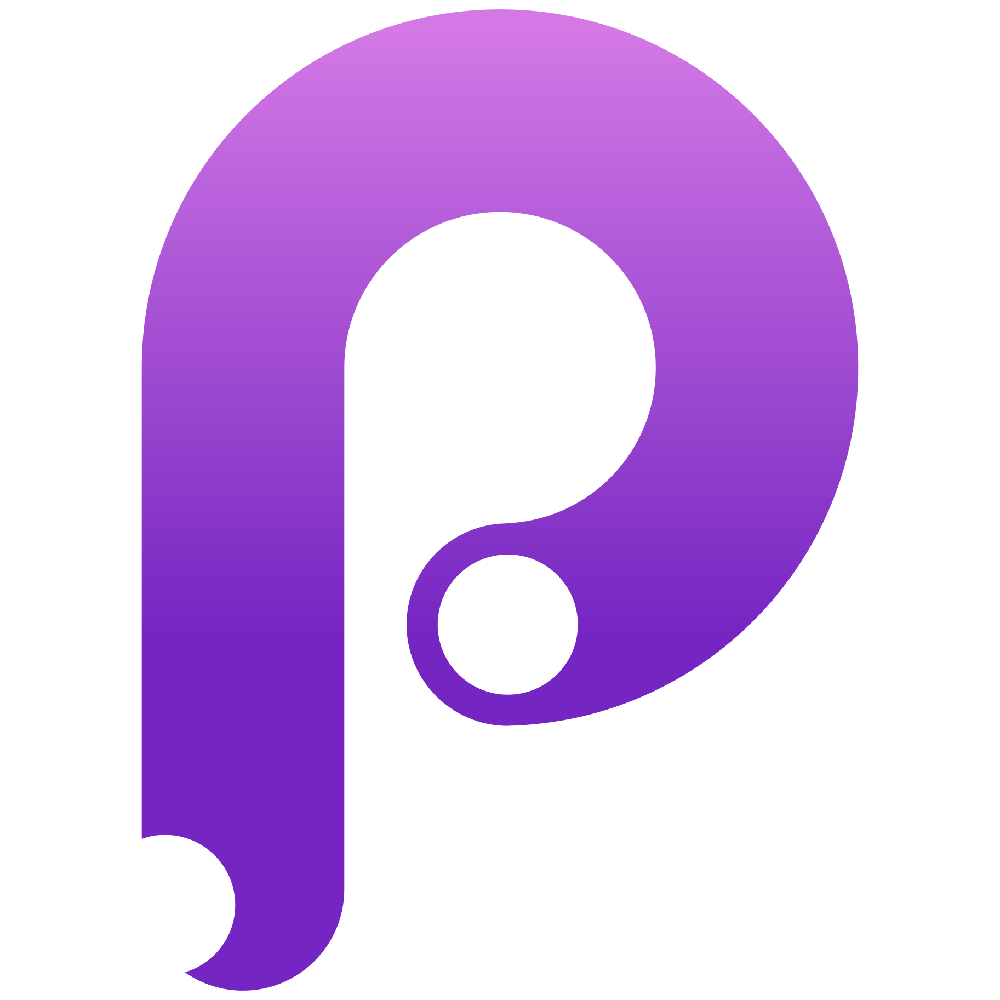